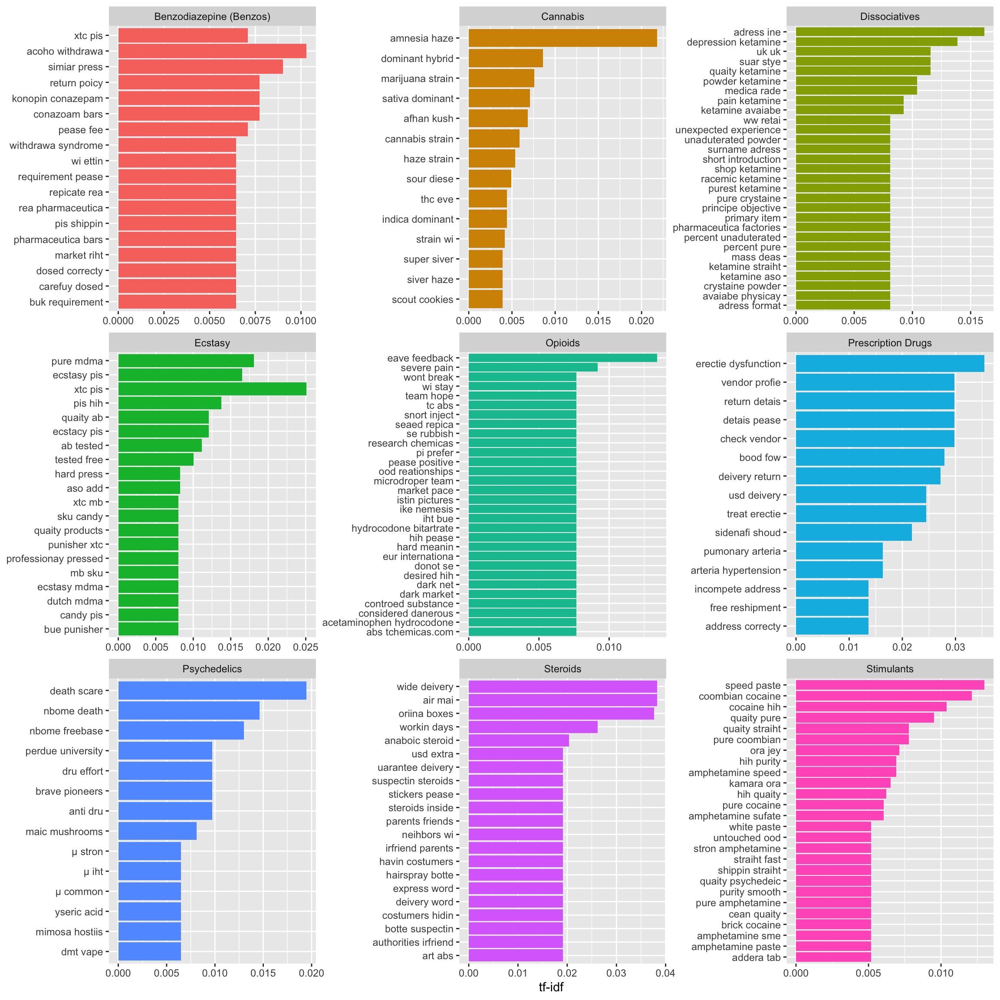
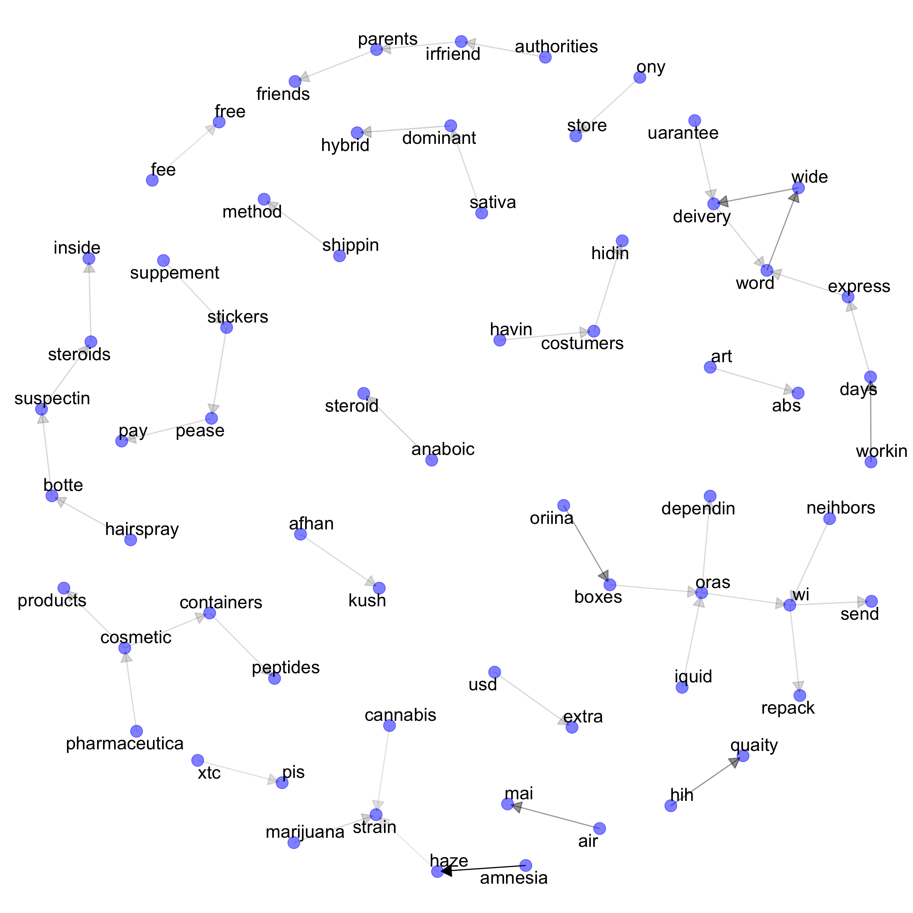

Code
library(tidyverse)
library(forcats)
library(stringr)
library(tidytext)
library(igraph)
library(ggraph)
library(ggrepel)
data <- read_csv("/Users/shihaitao/Documents/DarknetProject/Darknet/complete.csv")library(tidyverse)
library(forcats)
library(stringr)
library(tidytext)
library(igraph)
library(ggraph)
library(ggrepel)
data <- read_csv("/Users/shihaitao/Documents/DarknetProject/Darknet/complete.csv")word_only <- data %>%
1 select("Drug_Type_L", "MainContent") %>%
2 group_by(Drug_Type_L) %>%
summarise(Type_Content=paste(MainContent,collapse = "")) %>%
3 slice(c(-6, -11)) %>%
4 unnest_tokens(word, Type_Content) %>%
mutate(word = str_remove_all(word, "\\d+")) %>%
mutate(word = str_remove_all(word, "mg|g|ml|l")) %>%
filter(word != "") %>%
5 count(Drug_Type_L, word, sort = TRUE) %>%
ungroup()word_tf_idf <- word_only %>%
bind_tf_idf(word, Drug_Type_L, n)word_top15 <- word_tf_idf %>%
group_by(Drug_Type_L) %>%
arrange(desc(tf_idf)) %>%
top_n(15,tf_idf) %>%
ungroup()word_top15# A tibble: 158 × 6
Drug_Type_L word n tf idf tf_idf
<chr> <chr> <int> <dbl> <dbl> <dbl>
1 Steroids steroids 127 0.00910 2.20 0.0200
2 Dissociatives ketamine 220 0.0312 0.588 0.0183
3 Cannabis strain 309 0.0113 1.50 0.0170
4 Psychedelics nbome 40 0.00725 2.20 0.0159
5 Cannabis sativa 177 0.00648 2.20 0.0142
6 Steroids steroid 89 0.00638 2.20 0.0140
7 Steroids oras 87 0.00624 2.20 0.0137
8 Opioids oxycodone 25 0.00565 2.20 0.0124
9 Cannabis haze 207 0.00758 1.50 0.0114
10 Cannabis indica 128 0.00469 2.20 0.0103
# ℹ 148 more rowsword_top15 %>% ggplot(aes(tf_idf, fct_reorder(word, tf_idf), fill = Drug_Type_L)) +
geom_col(show.legend = FALSE) +
facet_wrap(~Drug_Type_L, ncol = 3, scales = "free") +
labs(x = "tf-idf", y = NULL) 
I am using a bigram as an example. N can be any number.
content_bigrams <-
data %>%
select("Drug_Type_L", "MainContent") %>%
group_by(Drug_Type_L) %>%
summarise(Type_Content=paste(MainContent,collapse = "")) %>%
slice(c(-6,-11)) %>%
unnest_tokens(bigram, Type_Content, token="ngrams", n=2 ) %>%
mutate(bigram = str_remove_all(bigram, "\\d+")) %>%
mutate(bigram = str_remove_all(bigram, "mg|g|ml|l")) %>%
filter(bigram != " ") %>%
count(Drug_Type_L, bigram, sort = TRUE) %>%
ungroup()The tibble of bigrams:
content_bigrams# A tibble: 35,489 × 3
Drug_Type_L bigram n
<chr> <chr> <int>
1 Cannabis amnesia haze 130
2 Cannabis is a 123
3 Steroids if you 111
4 Cannabis this strain 96
5 Cannabis with a 81
6 Cannabis of the 79
7 Cannabis it is 76
8 Steroids we are 71
9 Stimulants hih quaity 63
10 Cannabis in the 61
# ℹ 35,479 more rowsCleaning the data by removing stop words, ““, and”.”
bigrams_separated <- content_bigrams %>%
separate(bigram, c("word1", "word2"), sep = " ")
bigrams_filtered <- bigrams_separated %>%
filter(!word1 %in% stop_words$word & word1 != "" & word1 != ".") %>%
filter(!word2 %in% stop_words$word & word2 != "" & word2 != ".") So, if we want to know which words are commonly connected to aroma, we can simply add the code like this:
bigrams_filtered %>% filter(word1 == "aroma" | word2 == "aroma")# A tibble: 22 × 4
Drug_Type_L word1 word2 n
<chr> <chr> <chr> <int>
1 Cannabis aroma favor 5
2 Cannabis haze aroma 5
3 Cannabis review aroma 5
4 Cannabis aroma takes 4
5 Cannabis stron aroma 4
6 Cannabis emony aroma 3
7 Cannabis amazin aroma 2
8 Cannabis citrus aroma 2
9 Cannabis aroma characteristic 1
10 Cannabis aroma durin 1
# ℹ 12 more rowsbigrams_unite <- bigrams_filtered %>% unite(bigram, word1, word2, sep = " ")bigrams_unite %>% bind_tf_idf(bigram, Drug_Type_L, n) %>%
group_by(Drug_Type_L) %>%
arrange(desc(tf_idf)) %>%
top_n(14,tf_idf) %>%
ungroup() %>%
ggplot(aes(tf_idf, fct_reorder(bigram, tf_idf), fill = Drug_Type_L)) +
geom_col(show.legend = FALSE) +
facet_wrap(~Drug_Type_L, ncol = 3, scales = "free") +
labs(x = "tf-idf", y = NULL) 
Please note: due to the small sample size, it does not work well. However, if we can use this method to analyse the data from Cambridge, it could be useful.
bigrams_separated %>% filter(word1 == "not") %>% count(word1, word2, sort = TRUE)# A tibble: 105 × 3
word1 word2 n
<chr> <chr> <int>
1 not be 8
2 not arrive 4
3 not eiibe 4
4 not et 4
5 not in 4
6 not ony 4
7 not as 3
8 not for 3
9 not hesitate 3
10 not respond 3
# ℹ 95 more rowsIn sentiment analysis, a sentence with ‘not happy’ will be defined as positive, which is wrong. Bigrams can help us to know how many points are miscalculated and we can reverse the contribution to the sentiment score. The most common words associated with negation are ‘not’, ‘never’, ‘no’, and ‘without’.
bigram_graph <- bigrams_filtered %>%
select(-Drug_Type_L) %>%
filter(n>20) %>%
graph_from_data_frame()
bigram_graphIGRAPH c3bdfc3 DN-- 65 47 --
+ attr: name (v/c), n (e/n)
+ edges from c3bdfc3 (vertex names):
[1] amnesia ->haze hih ->quaity air ->mai
[4] wide ->deivery word ->wide workin ->days
[7] oriina ->boxes dominant ->hybrid anaboic ->steroid
[10] marijuana ->strain art ->abs authorities->irfriend
[13] botte ->suspectin costumers ->hidin days ->express
[16] deivery ->word express ->word hairspray ->botte
[19] havin ->costumers irfriend ->parents neihbors ->wi
[22] parents ->friends pease ->pay shippin ->method
+ ... omitted several edgesa <- grid::arrow(type = "closed", length = unit(.15, "inches"))
ggraph(bigram_graph, layout = "kk") +
geom_edge_link(aes(edge_alpha = n), show.legend = FALSE,
arrow = a, end_cap = circle(.05, 'inches')) +
geom_node_point(color = "blue", alpha = 0.5, size = 5) +
geom_node_text(aes(label = name), repel = TRUE, size = 6) +
theme_void()
PS.
Examining the phi coefficient for pairwise correlation can also be useful, especially when dealing with large datasets.
Useful R packages for NLP : CRAN Task View for Natural Language Processing
A few of my thoughts: